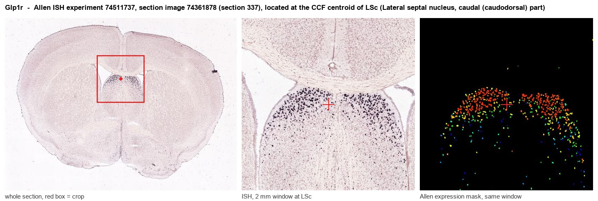
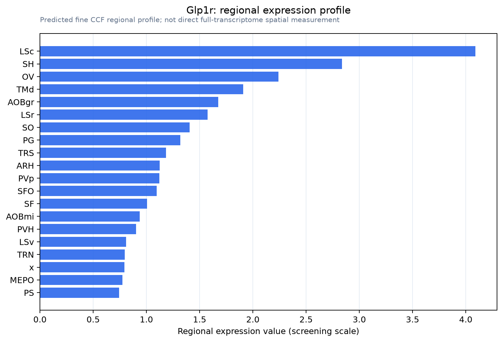

Glp1r
Glucagon-like peptide 1 receptor (GLP-1 receptor) (GLP-1-R) (GLP-1R)
Spatial tier: RESTRICTED · Class: GPCR · Top region: LSc (Lateral septal nucleus, caudal (caudodorsal) part) · Positive regions: 13/554
46.1Discovery Score
42.9Targetability Score
CEvidence grade C
What this means: Glp1r: fine CCF profile is restricted toward LSc (top regions: LSc, SH, OV, TMd, AOBgr; 13 positive regions); direct spatial validation is still required.
Function in LSc: evidence, prediction, innovation
- Gene function
- GLP1R is a class B secretin-family G-protein-coupled receptor for glucagon-like peptide-1, a peptide released from intestinal L cells and from preproglucagon neurons of the caudal NTS. It couples to Gs, raising cAMP and PKA activity, and is the target of the incretin drugs exenatide, liraglutide and semaglutide, which lower blood glucose and body weight.
- Region function
- The caudal (caudodorsal) lateral septal nucleus is a GABAergic hub receiving dense ventral-hippocampal CA1 input and projecting to hypothalamus and VTA; it suppresses feeding and controls anxiety, social behaviour and stress responses.
- Published in this region
- direct Direct. Terrill et al. 2016 showed that blocking endogenous GLP-1 receptors in the lateral septum with exendin-9 increases food intake while local exendin-4 suppresses it, and Chen et al. 2024 showed that GLP1R-positive lateral septum neurons mediate the anorectic and weight-lowering effects of liraglutide. Harasta et al. 2015 showed that septal GLP1R expression level determines suppression of cocaine-induced behaviour, and D'Ottavio et al. 2026 showed that septal GLP-1 receptors control alcohol taking and seeking.
- Predicted function
- Prediction: septal GLP1R should turn out to act less on homeostatic hunger than on the motivational cost of pursuing a reward, so the caudodorsal subdivision in particular is predicted to mediate effort-based suppression rather than meal termination. Cell-type-restricted Glp1r deletion in LSc is predicted to leave ad libitum chow intake near-normal but to abolish the reduction in progressive-ratio breakpoint for palatable food and alcohol produced by systemic semaglutide, while chemogenetic activation of LSc Glp1r-Cre neurons should suppress motivated seeking without inducing conditioned taste avoidance - a clean dissociation from the aversive area postrema arm of GLP-1 action.
- Innovation
- ★★☆☆☆ 2/5 Lateral septum GLP1R is an active and fast-moving field with several strong recent papers, though the caudodorsal subdivision and its dissociation from hindbrain aversion are still open.
- Tools
- Glp1r-Cre and Glp1r-ires-Cre mice, Glp1r floxed and Glp1r-null lines, GLP1R-Venus reporters; agonists exendin-4, liraglutide and semaglutide; antagonist exendin-(9-39); fluorescent GLP1R ligands for anatomy; ventral-hippocampal input mapping with retrograde AAV.
- References
Direct evidence located at the region

Allen ISH experiment 74511737, section image 74361878 (section 337): the section that contains the CCF centroid of Lateral septal nucleus, caudal (caudodorsal) part according to the Allen image-to-atlas alignment (reference_to_image), with a 2 mm window around that point. Left: whole section, red box = window. Middle: ISH signal. Right: Allen's expression-mask view of the same window. open this image in the Allen viewer
Look it up yourself: Allen Mouse Brain ISH for Glp1rAllen reference atlas: LSc (structure 250)ABC Atlas MERFISH viewer(in the ABC Atlas choose dataset MERFISH-C57BL6J-638850-CCF, colour cells by gene "Glp1r" or by parcellation_substructure "LSc")All genes confined to LSc + 3-D brain
Direct spatial evidence
MERFISH REGION LOCATOR

Regional expression figure

Predicted WMB × fine-CCF profile; not direct full-transcriptome spatial measurement.
Spatial profile
Evidence and specificity
- Evidence status
- PREDICTED_FINE
- Direct sources
- None; predicted localization only
- Exclusive threshold
- 12 positive regions out of 554
- Spatial specificity
- 0.345
- Top-region fraction
- 0.095
- Filter status
- PASS
Interpretation limits
- Cell-type-to-region projection is imputed expression, not direct spatial measurement.
- Adult reference atlases do not establish stability across age, sex, strain, state, or disease.
- Transcript abundance does not guarantee protein abundance or genetic-tool performance.